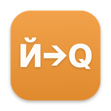

Qwerty Switcher
Automatically fixes the wrong Russian or English keyboard layout and converts selected text or the last typed word. Input is processed locally and never leaves the Mac. The app stays offline unless you turn on update checks: then, once a day, it fetches a single file from this site and sends nothing about you. It does not decide by dictionary lookup alone: every word is weighed against the dictionary, word frequency, neighbouring letters and the language of the surrounding text, so words no dictionary knows still get fixed, while Latin commands in a terminal are left alone.
- Instant correction while you type: from the fourth letter, before the space
- Typing with both Shift keys no longer accidentally disables auto-switching
- Learns from your fixes: a word you correct twice gets fixed automatically
- Game mode: detects games and keeps its hands off your keys while you play
- Logs stay on your Mac: the verbose log is off by default and the shareable report strips key codes; per-app profiles and timed pause
- Local text snippets and versioned settings backup
- Updates are opt-in: checks and auto-install are switched on in settings, and permissions survive an update
The build is signed with a self-signed certificate, so the first launch shows a macOS warning. macOS 15 and later: dismiss it, open System Settings → Privacy & Security and click “Open Anyway” at the bottom. macOS 13 to 14: right-click the app → Open. After that it launches normally, and updates install without asking for permissions again.